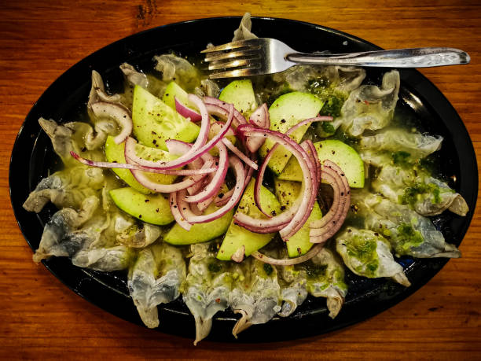

Aguachile

Cut the shrimp in half, removing its tail and any veins. This makes
for easier eating and faster marinating time. If using very small shrimp,
you can butterfly them, leaving one side attached if you prefer,
but I find just cutting them in half is easiest and fastest.
Ingredients
Aguachile Ingredients
FOR THE SHRIMP
- Raw Shrimp
- Lime Juice - Enough to cover the shrimp and cook them.
- Salt
FOR THE RED ONION
- Sliced Red Onion
- Vinegar - I'm using simple white vinegar, though you can use others.
- Water - Enough to cover the onions
FOR THE AGUACHILE MARINADE
- Lime Juice - Reserve some of the lime juice from marinating the shrimp, or use fresh if you'd like.
- Jugo Maggi - or use Soy Sauce
- Produce - Garlic, cilantro, jalapeno peppers, serrano peppers
- Salt
AGUACHILE GARNISH
- Sliced cucumber, radish, serrano, chopped cilantro, spicy chili flakes